Angular velocity
Purely translational motion occurs if every particle of the body has the same instantaneous velocity as every other particle. Purely rotational motion occurs if every particle in the body moves in a circle about a single line called axis of rotation.
The motion of an object moving around an axis, circular motion, is described in terms of the angular displacement, with angles measured in radians. In general, the angle θ subtended by an arclength s along a circle of radius R, measured in radians counterclockwise from the positive x-axis, is
θ = s/R
Having defined angular displacements, it’s natural to define an angular velocity:
ω = ωk
with k unit vector along the axis of rotation and ω the angular speed defined as
ω = |dθ/dt|
The right-hand grip rule that determines the direction of the angular velocity vector: if the fingers of the right hand curl around the axis in the direction of rotation of the body, the extended thumb points along the direction of the angular velocity vector. This means that for a body rotating around the z axis, ω is positive for an anticlockwise direction and negative for a clockwise rotation.
Angular acceleration
To obtain the angular acceleration vector, we apply the time derivative on both sides of ω = ωk
Hence
However k is a unit vector with constant orientation, and therefore dk/dt = 0. Thus the previous equation reduces to
α = αk
Relation between angular and linear velocity
We may use these rules to derive vector relations between linear and angular variables for a body moving in a circle of radius R. The velocity, v has only one component tangential to the circle whose magnitude is
v = ds/dt
so v is positive when s increases with time (anticlockwise direction) and negative when s decreases with respect to t (clockwise rotation). Further since, s = Rθ, we have
that is
v = Rω
If R and v are in the plane of the page, while Ω points out of the page, we must have v = ω x R.
The procedure that we used to develop the kinematic equations for linear motion under constant acceleration can be used to derive a similar set of equations for rotational motion under constant angular acceleration. The resulting equations of rotational kinematics, along with the corresponding equations for linear motion, are as follows:
| Translational Motion (1 dimention) | Rotation About a Fixed Axis |
|---|---|
| x = x0 + vxt Constant linear velocity | θ = θ0 + ωt Constant angular velocity |
| vx = vx0 + axt Constant linear acceleration | ωz = ωz0 + αzt Constant angular acceleration |
| x = x0 + vx0t + ½ axt | θ = θ0 + ωz0t + ½ αzt |
| vx2 = vx0t + ½axt2 | ωz2 = ωz02 + 2αz(θ − θ0) |